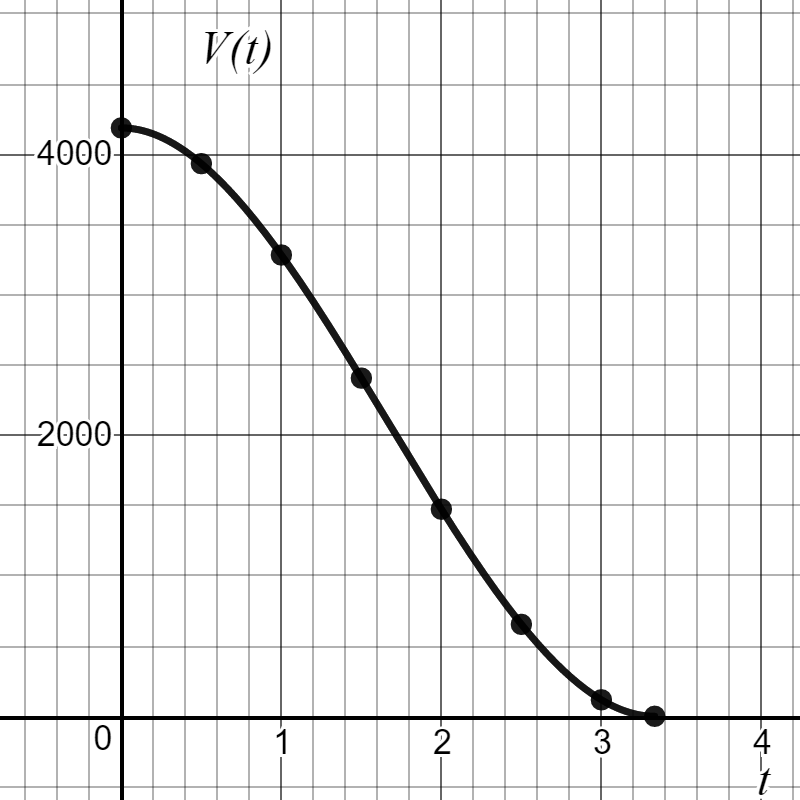
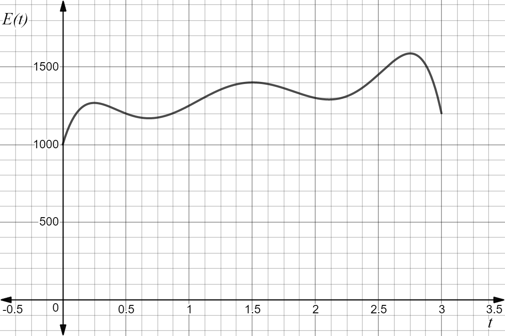

Skip to main content
Contents Dark Mode Prev Up Next \(
\newcommand{\lt}{<}
\newcommand{\gt}{>}
\newcommand{\amp}{&}
\definecolor{fillinmathshade}{gray}{0.9}
\newcommand{\fillinmath}[1]{\mathchoice{\colorbox{fillinmathshade}{$\displaystyle \phantom{\,#1\,}$}}{\colorbox{fillinmathshade}{$\textstyle \phantom{\,#1\,}$}}{\colorbox{fillinmathshade}{$\scriptstyle \phantom{\,#1\,}$}}{\colorbox{fillinmathshade}{$\scriptscriptstyle\phantom{\,#1\,}$}}}
\)
Section 1.1 Representing Mathematical Relationships
Mathematical relationships between two quantities can be represented in multiple ways: as a table, as a graph or as an equation. Each of these representations adds to our understanding of a mathematical situation, and we should be able to approach a given situation by considering each of these representations.
Figure 1.1.1. The
domain of a function is the set of inputs to the function. The
range of a function is the set of outputs from the function.

Figure 1.1.2. Table 1.1.3. Table for \(V(t)\)
0
4189
0.5
3934
1
3284
1.5
2408
2
1474
Investigation 1.1.1 . Punch Bowl Investigation.
Table 1.1.3 and
Figure 1.1.2 show the relationship between
\(V\text{,}\) the volume of punch in a bowl at a party, and
\(t\text{,}\) the time in hours since the party began.
Use the table and graph above for
\(V(t)\) to answer the following questions:
Add two additional points to the table by using information contained in the graph.
What is the volume of punch in the bowl 1 hour after the party started?
When was the volume of the punch approximately 650 in
\(^3\text{?}\)
What was the volume of punch in the bowl when the party started?
When will the volume of punch in the bowl be half of the volume when the party started?
When will the party run out of punch?
In what time interval will the volume of punch in the bowl be between 1474 in
\(^3\) and 3284 in
\(^3\text{?}\)
When is the volume of punch in the bowl decreasing fastest? When is the volume of the punch in the bowl decreasing slowest?
What are the domain and range of
\(V\text{?}\)
If the volume of punch in the bowl is given by the equation
\begin{equation*}
V(t)=72\pi t^3-360 \pi t^2+\frac{4000}{3} \pi
\end{equation*}
what is the volume of punch in the bowl 1.25 hours after the party started? Add this information to the graph and table above.
Problem 1.1.4 . Hiker Elevation.
The graph below shows the elevation of a hiker,
\(E(t)\) (in feet),
\(t\) hours into a 3 hour hike.

Figure 1.1.5.
What is the elevation of the hiker after 1.5 hours?
At what times is the hiker at an elevation of 1200 feet?
Solve the equation
\(E(t)=1200\text{.}\)
At what times is the hiker at an elevation of at least 1200 feet?
Solve the inequality
\(E(t) \geq 1200\text{.}\)
What is the maximum elevation of the hiker? At what time is he at this elevation?
A function is a specific kind of relation, where each input of the function leads to only one output. Functions are used throughout math and science, and will be a primary focus in this course.
Example 1.1.6 . Using the graph of \(g\) .
The function
\(g\) is graphed below. Use the graph to answer the following questions.
Figure 1.1.7.
\(\displaystyle g(x) = -1\)
\(\displaystyle g(x) = 3\)
\(\displaystyle g(x) = 0\)
\(\displaystyle g(x) < 0\)
Problem 1.1.8 .
The graph of
\(g\) is shown below.
Figure 1.1.9.
Evaluate
\(g(-3.5)\text{.}\)
Solve
\(g(x) = 0\text{.}\)
Solve
\(g(x) > 0\text{.}\)
Solve
\(g(x) \leq 0\text{.}\)
Problem 1.1.10 .
Use Desmos to graph the function
\(g(x)=x+\sin(2x)\text{.}\)
Evaluate
\(g(0)\text{.}\)
Evaluate
\(g\!\left(- \frac{\pi}{3}\right)\text{.}\)
Solve
\(g(x)=1.288\text{.}\)
Solve
\(g(x)=10\text{.}\)
Solve
\(g(x)=-1200\text{.}\)
Definition 1.1.11 .
To determine the output of a function for a given input using an equation, substitute the given input into the equation. Evaluate the resulting expression making sure to follow the
order of operations :
Simplify expressions within grouping symbols (parentheses, roots and fraction bars)
Perform multiplication and division from left to right
Perform addition and subtraction from left to right
Problem 1.1.12 .
Evaluate each function for the indicated value or expression.
\(\displaystyle k(t) = 3t^3 - 2t^2 + t,\; k(-2)\)
\(\displaystyle q(x) = \dfrac{x - 2}{x^2 + 2},\; q(n^2)\)
\(\displaystyle f(n) = 2 \cdot 3^{2n - 3},\; f\!\left(\tfrac{1}{2}\right)\)
\(\displaystyle m(x) = \sqrt{x - 3} + 4,\; m(x^2 + 4)\)

![A piecewise graph of g(x) appears on a coordinate grid. It begins with a solid point at (-4, 2) connected by a decreasing line to an open circle at (-2, 0.5). From that open circle, the graph continues downward to a solid point at (-1, 0). A rising line segment connects (-1, 0) to a solid point at (2, 2). Farther right, there is an open circle at (4, -1), and from that point the graph becomes a smooth upward-curving parabola ending at a solid point at (5, 3). Open circles indicate values where the function is not defined, and solid circles show defined points.](external/195-1.png)